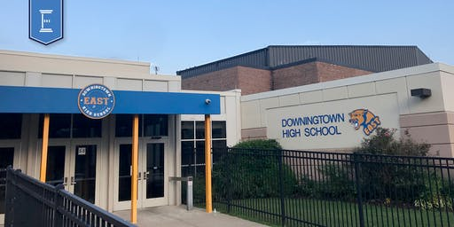
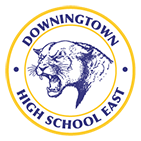

Computer Science Courses
Advanced Digital Info Tech (9-12th grade)
Students will learn to create products to communicate using a variety of digital media and Microsoft Office tools as well as to practice safe, legal, and responsible use of information and technology. Additionally, students will be introduced to basic programming language(s). Class assignments will be project-based and students will sharpen computer skills needed to support personal productivity, group collaboration, and self-directed learning.
Intro to Computer Science (9-12th grade)
This course will focus on skills such as logical reasoning, computational thinking, and problem solving using discovery learning, Arduino microcontrollers, Finch robots, and object oriented programming language(s). This course provides an excellent foundation in computer science principles for the AP Computer Science courses.
AP Computer Science A (10-12th grade)
The focus of this course is object-oriented programming methodology, and algorithm development. Students will analyze and design programs to solve complex problems, and consider the social and ethical implications of technological advances.
AP Computer Science Principles (9-12th grade)
This course introduces students to the essential ideas of computer science and show how computing and
technology can influence the world. Students will create digital artifacts, such as videos or mobile apps that have practical, real-world use.
Web Page Design (9-12th grade)
This course focuses on web page planning, basic design, layout, working with images, setup and maintenance of a web site.
Technology Courses
CAD I (9-12th grade)
Students gain basic understanding of technical graphics communication and computer-aided engineering design through use of computer-aided design/drafting software.
CAD II (10-12th grade)
Students learn advanced CAD concepts such as advanced drawing setups, 3-D modeling, and rendering. Students use a high quality wide formal plotter to print their rendered images.
Residential Architecture (9-12th grade)
This is the course for students interested in CAD as it relates to creating architectural plans.
Design Architecture (10-12th grade)
This is the course for those individuals interested in architecture as a possible career.
Electronics I (9-12th grade)
This course deals with familiarization and use of the lab equipment to complete a design project. Students study direct current (DC) electricity in relation to the design of a project
Electronics II (10-12th grade)
This course involves a more in-depth exploration of DC and AC electrical theory, including DC circuit analysis, an introduction to the oscilloscope and AC fundamentals. The course also introduces students to electronic systems. Project work is required in the course.
Electronics III (11-12th grade)
This course continues the in-depth study of Electronic components started in the previous course. Individual solid-state components as well as Integrated Circuits (IC) are studied. A “block” or “systems” approach to understanding electronic devices is used.
Graphic Arts I (9-12th grade)
Students will explore the technological aspects of the major printing processes. Students are introduced to desktop publishing through the use of Macintosh computer system, CD ROM, scanner digital camera, Internet and laser printer.
Graphic Arts II (10-12th grade)
Students explore computerized darkroom techniques with emphasis on multi-color screen process and offset lithography. Students explore advanced desktop publishing techniques with emphasis on networking data and file sharing.
Graphic Arts III (11-12th grade)
Students electing Graphic Arts III are involved in a research and development problem dealing with a product or process of their interest.
Digital Photography I (9-12th grade)
Students will study types of cameras, camera accessories, black & white, color photography, printing processes, photographic composition, portrait techniques, and the introduction of industry software.
Photography II (10-12th grade)
Students will use digital cameras with advanced industry editing techniques to create a photography portfolio.
Photography III (11-12th grade)
Students will learn portrait techniques, and advanced digital editing techniques using industry software.
Photography IV (12th grade)
The course is self-directed to meet the students’ needs or interests. Students will also be asked to submit work for the school yearbook and newspaper to help supplement photography used in both publications. In addition, students will take photographs that will challenge their creativity and technical knowledge of camera control.
Video Applications I (9-12th grade)
The content includes, but is not limited to, video technology theory, video camera techniques, nonlinear editing, pre-production procedures, composition, lighting, careers in media, and Internet broadcasting. Students focus on the everyday uses of video technology.
Video Applications II (10-12th grade)
k. Students will develop planning & leadership skills while designing and filming the videos needed in the process of publishing.
TV Studio (9-12th grade)
This is a course that provides students the opportunity to experience the process of producing a live news show. Students work together as a team to produce the school’s news show.

GO TO OUR COMPANY PAGE
GO TO FIND INFORMATION ON OUR TSA CHAPTER
Copyright © 2020 https://ampereoutlet.github.io/